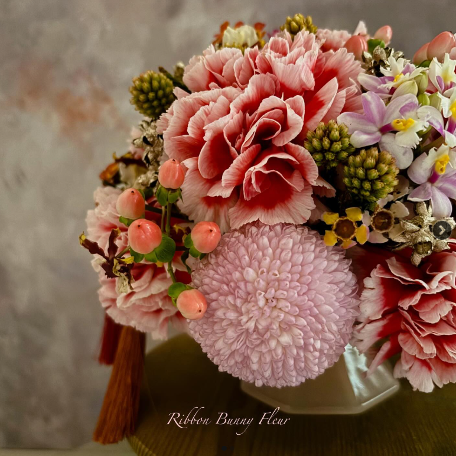

〖 🎀Ribbon Bunny Fleur 台北新年快閃課🌸〗

乙巳蛇年將至，萬象更新。除舊迎新之際，親手為居家佈置生機蓬勃的花木草植，該是多麼應景且賞心悅目。
歡迎來體驗Ribbon Bunny Fleur為您精心設計的年節花藝課。
🔸時間：1/27（一）14：00 ~ 16：00（小年夜）
🔸地點：台北車站附近文創空間（報名成功後會告知上課地點）
🌺課程A：繁花似錦萬象新（鮮花作品）
古有宋代李嵩花籃圖，現代西方花藝有畢德邁爾（Biedermeier ）球狀花型，在不同的文化源流下、本體論迥異的花藝思想中，無獨有偶、各自演繹了花團錦簇的豐盛華美。
驚艷於花藝世界中、西異文化的碰撞，激盪出此年花創作的靈感火花。值此乙巳新歲，邀您一起拈花弄草、華麗玩轉中西花藝互文性（intertextuality ）。
🔸費用：2680元（2人同行價5000元）
🔸課程作品說明：
🈶使用全自然鮮切果材、鮮切花材
🈶使用日本大地農園乾燥金色果材
🈶使用韓國黑珍珠環保海綿
🈶附獨家櫻花粉玻璃材質飾品盤
🈶教授切花插着、鐵絲技巧及養護常識
🈶加碼附韓國精美蝴蝶裝飾流蘇（可選色）
🪻課程B：飛花點翠綻風華（永生花作品）
點翠，是古人集自然之美及工藝之巧的精湛傑作。歲末年終，以此為設計靈感，創作了點翠風格的飾品盤，也可作為裝飾畫。
此刻年節味漸濃，一起來靜心手作、為家中妝點華麗宮廷氣息，吉慶洋洋迎新歲。
🔸費用：1880元（2人同行價3600元）
🔸課程作品說明：
🈶使用日本大地農園永生玫瑰花
🈶使用獨家訂製造型石膏擴香石
🈶教授鐵絲技巧及永生花開花
🈶課程練習3朵永生玫瑰開花
🈶分享其他永生玫瑰延伸設計
🈶附精美禮盒（作品主體約12cm*12cm）
🔷️注意事項：
1.課程內容不限有無花藝基礎者。
2.鮮花課程使用花市購買之季節鮮切花、葉，如有過敏反應狀況者，建議衡估個人情況後再行報名。
3.請私訊報名，並於報名後三日內匯款，匯款後回報帳號末5碼、姓名與可聯絡電話，方為報名成功。請至少於上課日三日前報名。報名後如因故無法上課，因花材、資材已事先準備，建議轉讓課程或領回花材、資材自行製作（老師會口頭與文字指導）。永生花作品建議由老師代為製作。
4.照片為示範作品，實際使用花材將以時令品質佳、合適色系花材做搭配。恕無法與照片100%相同。
5.為響應環保，建議攜帶紙箱或提袋攜回作品。
任何花藝服務、客製花禮、機關團體邀課相關需求，歡迎私訊詢問🥰
🤗友善聲明：本粉專Ribbon Bunny Fleur及同名IG，所有課程設計、花藝作品、照片圖片影片及文案內容均為原創，
請尊重作者心血及智慧財產權🙏🏻
#台北花藝課 #新年桌花 #迎春花 #年節桌花 #擴香石 #永生花 #點翠 #客製花禮 #花藝教學 #花藝設計 #高雄花店 #左營花店 #凹子底花店